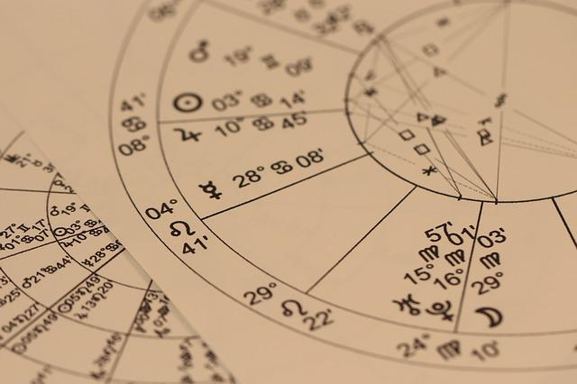

EL ASCENDENTE
Muchas personas creen que la personalidad está conformada por
las características de su signo solar cuando la verdad es que nuestra personalidad es la
combinación de todos los planetas que conforman la carta natal, la casa en que se
encuentran y sus alineaciones con otros planetas y puntos astrales.